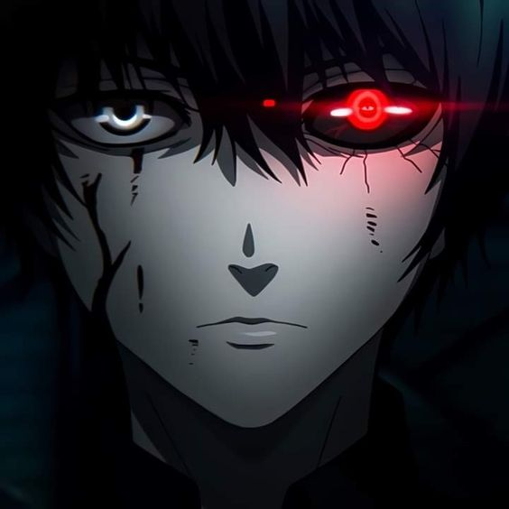

- 

L'accident
Autrefois simple humain, Ken Kaneki vivait une vie relativement normale. Cependant, suite à un accident les choses changent rapidement après que le docteur Akihiro Kano lui ait transplanté les Cellules RC de Lize Kamishiro une goule mangeuse d'homme, le transformant ainsi en Goule Artificielle.
La détresse
Ken est effrayé car il a remarqué qu'il doit se nourrir de chair humaine s'il veut survivre. Les goules sont invulnérables aux attaques physiques ce qu'il remarquera en tentant de mettre fin à ses jours. Son œil gauche trahit sa nature lorsqu'il est affamé, il porte alors un cache-œil pour dissimuler sa condition de goule.
L'université
Il étudie la littérature japonaise en 1ère année à l'Université Kamii. Il est alors un humain qui mène une vie relativement normale. Ken est un garçon calme. Il est aimable mais également introverti. Il lit beaucoup et passe du temps avec son meilleur ami, Hide.
L'Antique
Il intègre par la suite l'Antique, café connu des Goules comme un lieu de réunion, en tant que serveur à temps partiel. En effet le café est la seule chose que les goules peuvent consommer en dehors de la chair humaine. Grâce aux membres de l'Antique, Ken essaye d'apprendre à vivre comme les Goules le font et adopte le surnom de Cache-Oeil.
Evolutions de Kaneki Ken